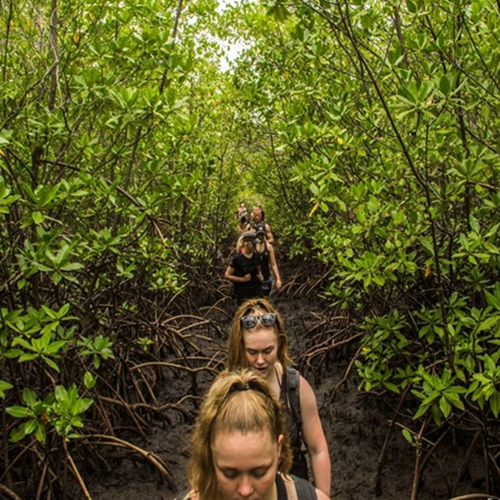
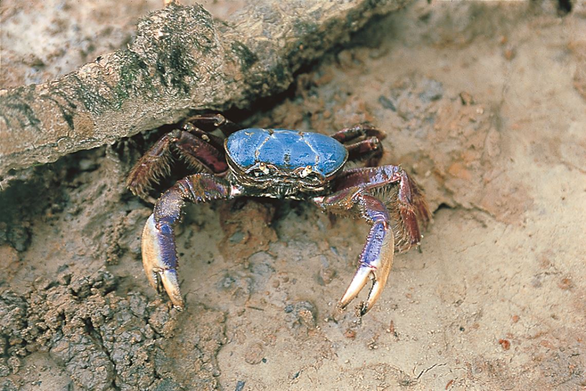
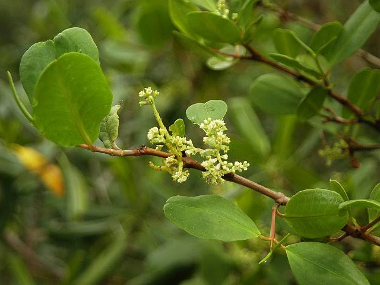
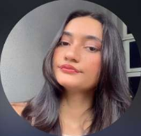
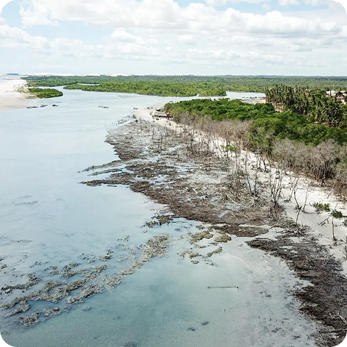

O começo de tudo
Conte aqui como surgiu o projeto Mangue Vivo e qual foi sua motivação inicial.

Educação ambiental e conservação dos manguezais. Juntos por um futuro mais sustentável!
Conheça o projetoO Mangue Vivo é um projeto de extensão da Universidade Federal do Ceará (UFC), Campus do Pici, dedicado à conservação dos manguezais e à promoção da educação ambiental em Fortaleza. Por meio de ações voltadas à comunidade, o projeto busca conscientizar a população sobre a importância desses ecossistemas para a biodiversidade, para a qualidade de vida e para o equilíbrio das regiões costeiras.
Além das atividades de pesquisa e extensão, o Mangue Vivo realiza campanhas educativas, mutirões de limpeza, palestras, oficinas e eventos que incentivam a participação da sociedade na preservação do meio ambiente. O projeto também produz materiais informativos e recursos didáticos que aproximam estudantes e visitantes da realidade dos manguezais, despertando o interesse pela ciência e pela sustentabilidade.



Conheça os momentos que construíram a trajetória do Mangue Vivo.
Conte aqui como surgiu o projeto Mangue Vivo e qual foi sua motivação inicial.
Descreva uma conquista ou atividade importante realizada nesta etapa.
Destaque o crescimento do projeto e suas ações de educação ambiental.
Conte como o projeto ampliou sua participação junto à comunidade.
Apresente a fase atual do Mangue Vivo e seus objetivos para o futuro.
Conheça a equipe por trás do Mangue Vivo!

Coordenadora

Vice-Coordenador

Servidora UFC

Educação Ambiental e Redes Sociais

Educação Ambiental

Redes Sociais e Jornal Digital

Educação Ambiental e Jornal Digital

Redes Sociais e Jornal Digital

Redes Sociais e Jornal Digital

Educação Ambiental

Integrante

Redes Socias e Jornal Digial
O Projeto Mangue Vivo tem como missão promover a conscientização ambiental e incentivar a preservação dos manguezais por meio da educação, da pesquisa e da extensão universitária. Buscamos aproximar a comunidade da importância desses ecossistemas, destacando seu papel na conservação da biodiversidade, na proteção do litoral e na manutenção da qualidade de vida.
Nossos objetivos incluem desenvolver ações educativas, realizar atividades de campo, incentivar práticas sustentáveis e apoiar pesquisas que contribuam para a conservação ambiental. Além disso, procuramos fortalecer o vínculo entre a Universidade Federal do Ceará e a sociedade, estimulando a participação da comunidade em iniciativas voltadas à proteção dos recursos naturais e à construção de um futuro mais sustentável.

Conheça algumas das ações desenvolvidas no nosso projeto!